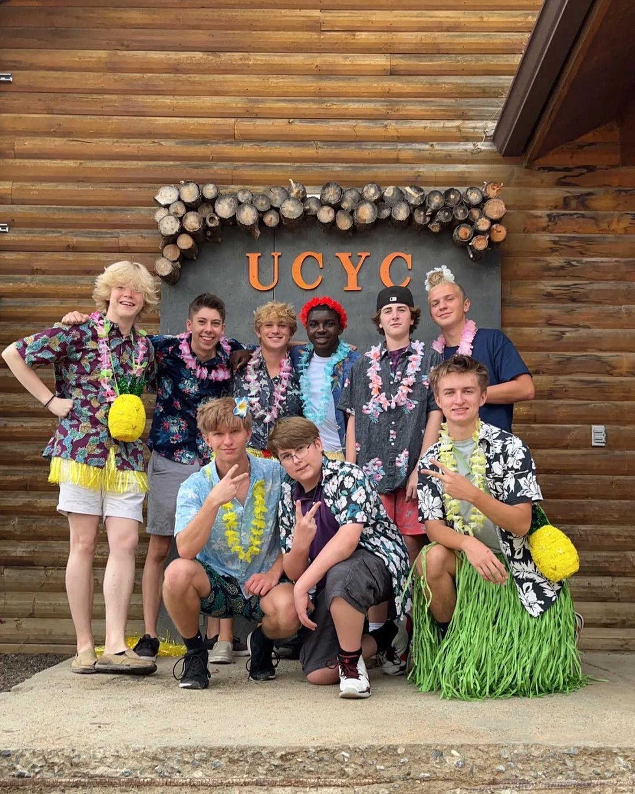

In Carter's early years, he attended a church in Delaware where he was put into daycare. At the time church was only a place where he would hope he could go on the playground. He knew almost nothing about his faith. However that can be accreditted to his young age. Not much is known about his beliefs in his early stages of life since no one would know the man he would turn out to be.
This next stage in Carter's life transformed his faith. He moved to Arizona and met a few people. One of these friends whose name is Gage, led him to Arizona Hills. Arizona Hills, which is now called Palmcroft Anthem, Was the start of Carter's journey to discover his own meaning of faith. Carter got into volunteer work working as a helper for children's services, running lights for the adult service, and helped with teardown. Carter grew in his faith but had found his belief was strongest when he was with others. At the time this was not an issue but once the COVID pandemic hit, Carter had slowly stopped attending church and his thirst for Christ had lessened.
| Terms To Know | |
|---|---|
| Teardown: The process of taking down and putting away the equipment. | VBS: Also known as Vacation Bible School is a camp for kids hosted by a church to give young kids a fun enviorment to learn about Jesus. |
Carter's senior year was about to start and nothing had changed. Until one of his friends from years ago who he kept occasional contact with starting inviting him to church again. His name is Kyle and with his and Gage's help, they got Carter back into consistently going to church. However, something had changed this time. Carter had found a new joy in going to church and in wanting to know more about God. He kept pushing himself leading to him running a small group and helped run a VBS where he even presented the Gospel to others. This prepared Carter for college as he was able to keep his faith strong in a new enviorment. Where he now goes to a church called Pela and goes to GCU's chapel.